원내 자체 기공실에서
직접 제작하고 바로 조정합니다
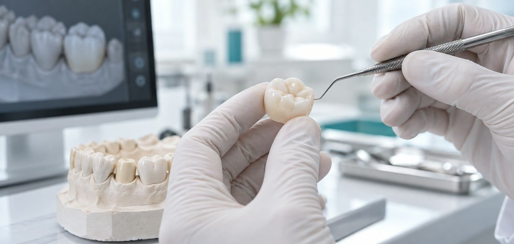
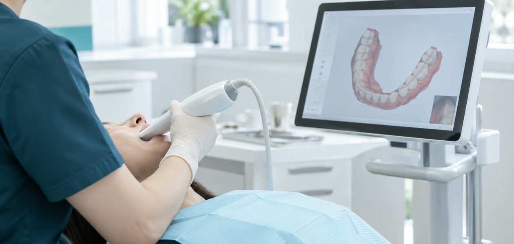
보철물은 한 번 장착하면 오랜 기간 사용하게 됩니다. 그래서 재료 선택만큼 정밀한 제작과 교합 조정이 중요합니다.
365서울예담치과는 구강스캐너로 정확히 채득하고 원내 기공실에서 직접 제작해, 색과 모양을 진료실에서 바로 확인하고 조정합니다.
완전히 망가지지 않았다면 치근을 최대한 보존하는 계획을 먼저 세웁니다.
가능한 한 발치하지 않고, 기능을 유지할 방법을 찾습니다.
브리지나 크라운 시 최소한의 삭제로 치아 구조를 지킵니다.
지르코니아, 세라믹 등 생체 친화적이고 자연스러운 재료를 선택합니다.
자연치아를 지키면 치열 붕괴를 막고 전체 수명을 늘릴 수 있습니다.
보철치료는 잃은 치아를 채우는 일이 아닌, 지킬 수 있는 치아를 최대한 남기는 일에서 시작합니다.
365서울예담치과는 발치와 삭제를 마지막 선택지로 두고, 남길 수 있는 구조를 먼저 찾습니다.
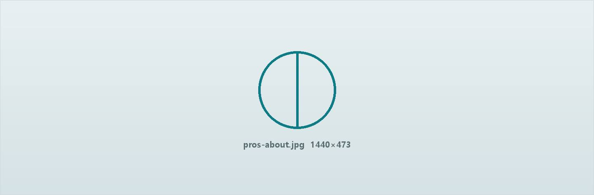
가능한 치아를 적게 깎고, 남은 구조를 살려 보철물을 설계합니다.
구강스캐너로 정확히 채득해 틈과 이물감을 줄입니다.
씹는 힘이 고르게 분산되도록 여러 번 확인하고 다듬습니다.
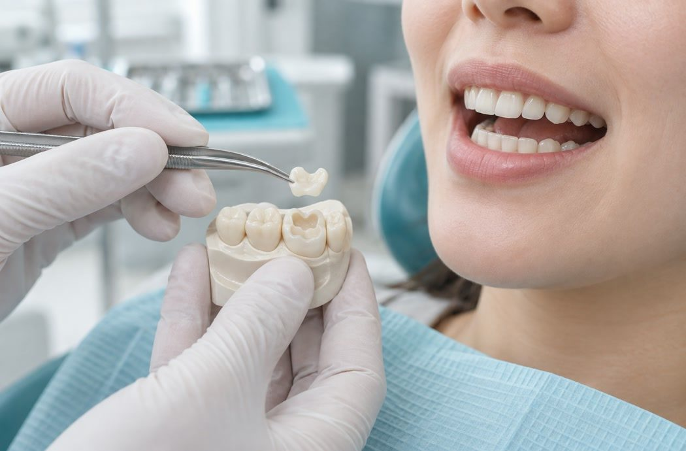
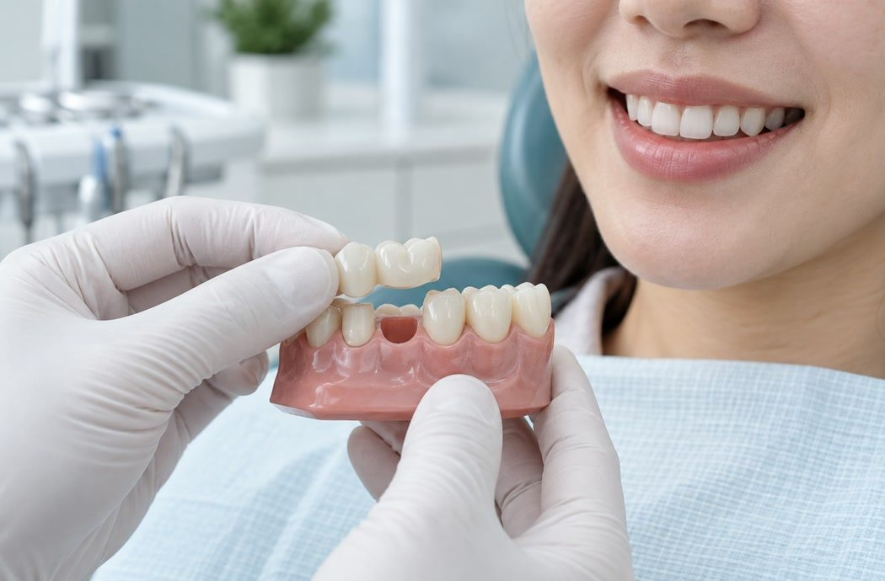
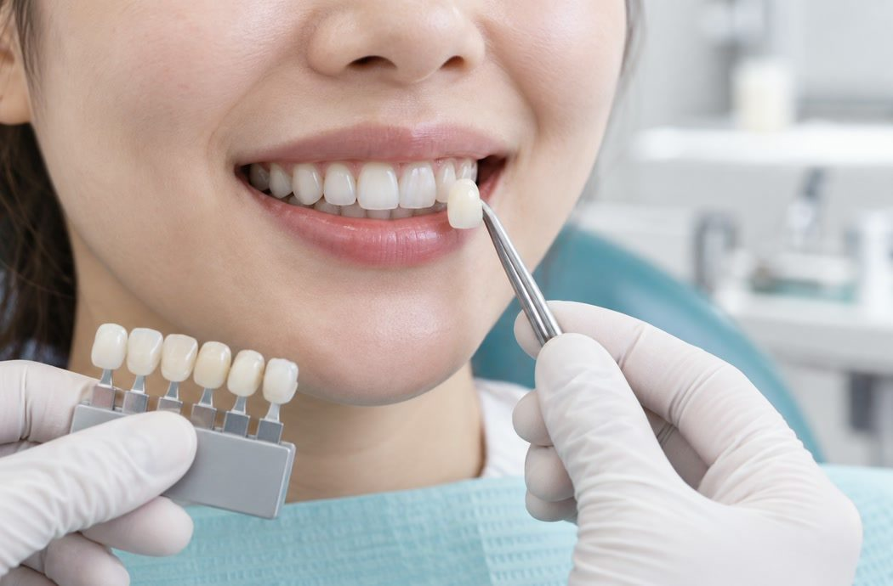
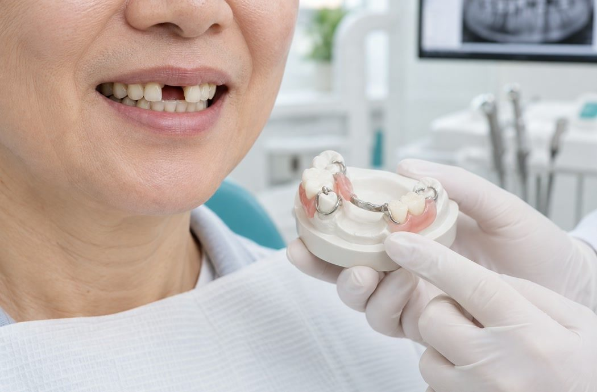
STEP 01
정밀 검사
구강 상태와 교합을 확인합니다
STEP 02
치아 형성
최소한으로 삭제하고 임시 보철을 장착합니다
STEP 03
구강 스캔
디지털 인상으로 정확히 채득합니다
STEP 04
원내 제작
자체 기공실에서 보철물을 제작합니다
STEP 05
장착·조정
색과 교합을 확인하고 최종 장착합니다
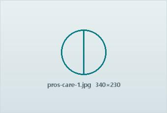
정기 검진
6개월마다 교합과 틈을 확인합니다.
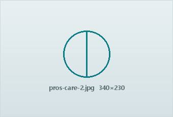
치실·치간칫솔
보철물 경계 부위를 꼼꼼히 관리합니다.
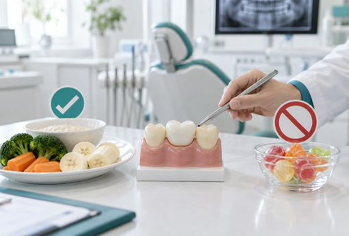
단단한 음식 주의
얼음·뼈 등은 보철물 파절의 원인이 됩니다.
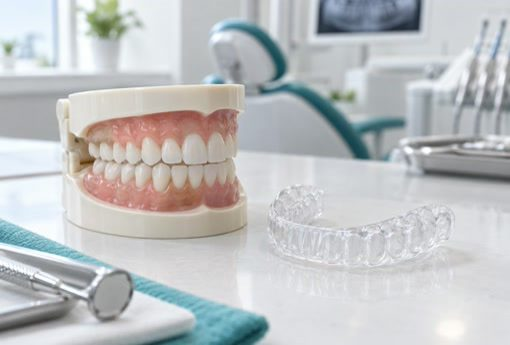
이갈이 관리
필요 시 나이트가드를 함께 사용합니다.
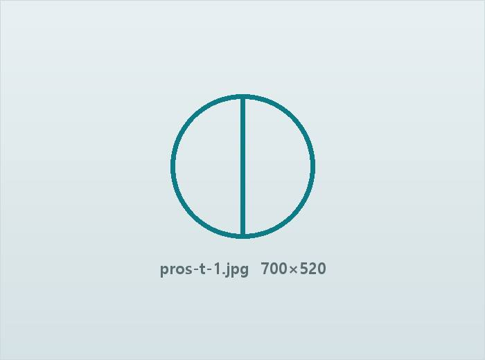
강도가 높고 변색이 적어 어금니까지 폭넓게 사용합니다. 자연치와 비슷한 투명도로 제작합니다.
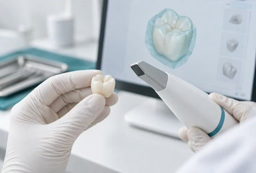
금속보다 강도가 높아 어금니에 적합
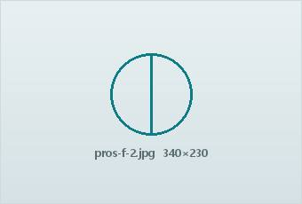
변색이 거의 없어 색이 오래 유지
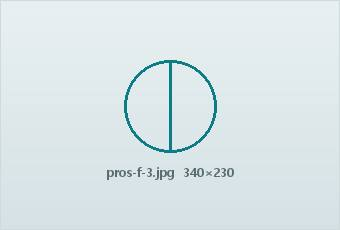
금속 알레르기 걱정이 없는 재료
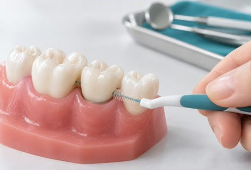
자연치와 비슷한 투명도로 제작
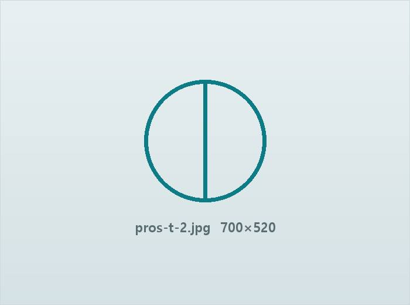
빛 투과율이 높아 앞니 심미 보철에 적합합니다. 얇게 제작해 치아 삭제량을 줄입니다.
빛 투과율이 높아 앞니에 적합
얇게 제작해 삭제량을 줄임
잇몸 경계가 어둡게 비치지 않음
색과 모양을 정밀하게 맞춤
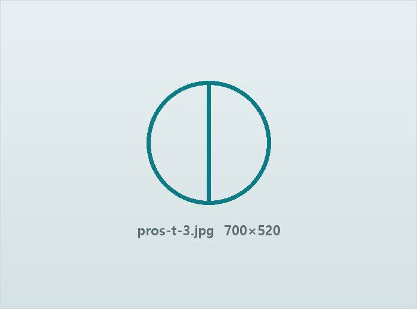
충치 범위가 큰 경우 본을 떠 제작한 보철물을 붙여 자연치를 최대한 보존합니다.
충치 부위만 정밀하게 제거
자연치아 구조를 최대한 보존
접착 틈을 줄여 재충치 위험 감소
세라믹·레진 중 선택 가능
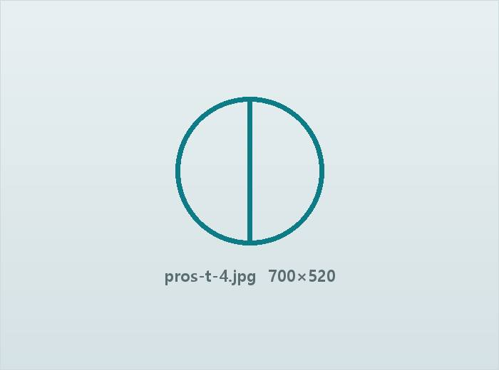
상실된 치아 양옆을 지지대로 연결해 회복합니다. 임플란트가 어려운 경우 선택합니다.
임플란트가 어려운 경우 대안
고정식이라 이물감이 적음
양옆 치아 삭제가 필요
3본 이상도 제작 가능
남은 치아와 잇몸 상태에 맞춰 제작하며, 임플란트와 결합한 틀니도 가능합니다.
잇몸뼈가 부족해도 가능
임플란트와 결합해 안정성 향상
남은 치아 상태에 맞춰 설계
정기 조정으로 헐거움 방지
재료와 범위에 따라 달라지는 보철 비용을 투명하게 안내해 드립니다.
지르코니아·올세라믹 등 재료에 따라 다릅니다.
단일 크라운인지 브리지인지에 따라 달라집니다.
신경치료·잇몸치료가 필요하면 추가됩니다.
당일 제작 여부에 따라 차이가 있습니다.
· 위 비용은 비급여 진료비로 환자분의 구강 상태와 선택하는 재료에 따라 달라질 수 있습니다.
· 정확한 비용은 정밀 검사와 상담 후 안내해 드립니다. 자세한 내용은 비급여 안내 페이지를 참고해 주세요.